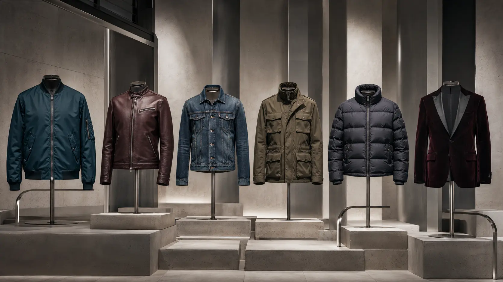

Field note 03 · Denim
Clean Denim Geometry
Proportion, wash and texture for a modern denim jacket rotation.

A good denim jacket earns its place through repeat use. Begin with context: the temperatures you actually meet, what you carry, how often you layer, and whether the jacket needs to move between casual and considered settings. A compelling photograph can start an idea, but routine is the better final editor.
Read the silhouette
Check the shoulder line first, then the relationship between body length and trouser rise. The jacket should make deliberate space for movement without looking accidental. Try it closed and open, seated and standing, with the thickest layer you realistically plan to wear. Small changes in hem position can alter the entire proportion.
Volume is not automatically poor fit. Some contemporary jackets are designed with dropped shoulders or a fuller body. The useful question is whether this volume remains controlled at the cuff, collar and hem. Those boundaries create visual structure and reduce fuss during wear.
Let material match the job
Dense fabrics can feel protective and hold a defined shape; lighter cloth may breathe and pack more easily. Examine the outer fabric, lining, zip or buttons, pocket bags and seam finishing together. Material descriptions vary between makers, so verify the exact composition and care label before making a purchase.
Build three honest combinations
Before adding a jacket to your wardrobe, identify three outfits you already own that support it. One can be simple, one work-ready and one more expressive. Repeating footwear or a base colour across those combinations helps the jacket feel integrated rather than dependent on future purchases.
For colour, notice contrast as well as hue. Petrol blue can sit quietly beside charcoal; burgundy brings warmth to stone and navy; ivory can brighten dark layers but may need more frequent care. These are styling observations, not fixed rules—personal comfort and cultural context remain important.
Care extends the design
Empty pockets before storage, close hardware that may snag and use a hanger broad enough for the shoulder. Airing often reduces unnecessary cleaning. Follow the maker's care instructions, especially for coated, suede-like, quilted or structured materials. For damage or specialist fabrics, a qualified cleaner or repair service is the safer route.
The useful conclusion
The strongest choice is rarely the loudest. It is the jacket that supports movement, combines with what you own and can be cared for within your normal week. Treat this guide as a framework, then confirm product-specific information with the seller before deciding.